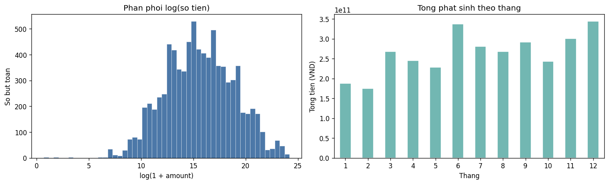
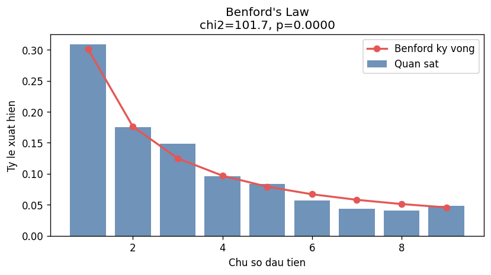
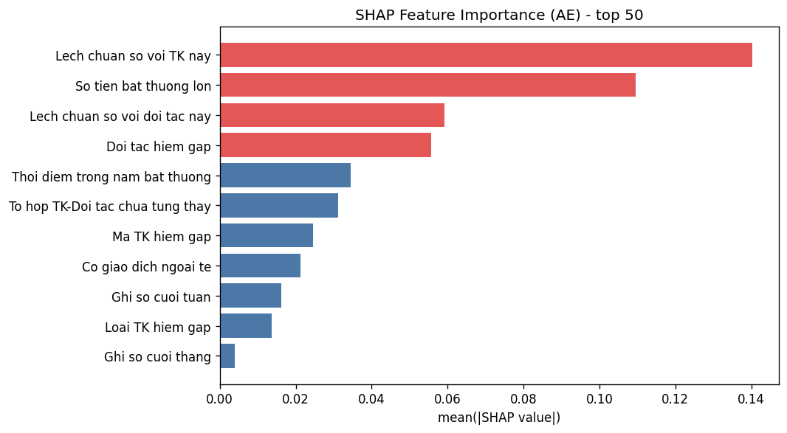
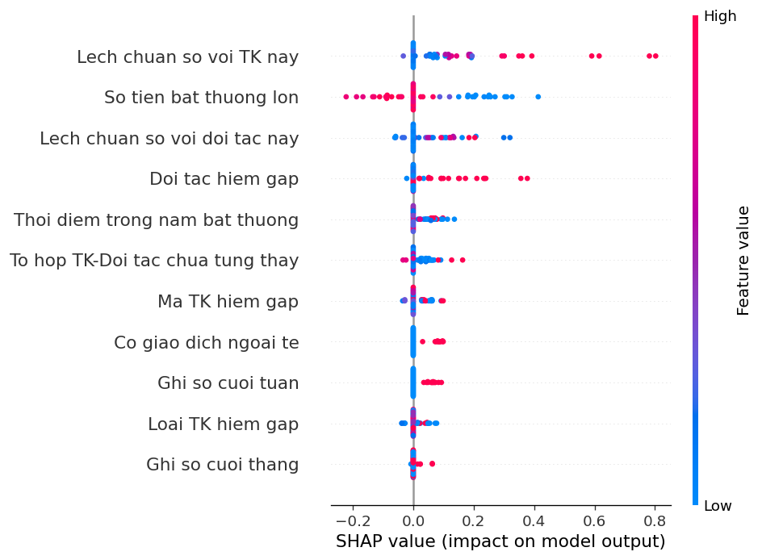

Ứng dụng Machine Learning phát hiện gian lận trong kế toán – tài chính
Xây dựng một framework phát hiện bất thường kế toán không giám sát gồm 4 tầng, kết hợp Isolation Forest, LOF, Deep Autoencoder và giải thích bằng SHAP — áp dụng trên dữ liệu sổ cái (General Ledger) thực tế của một doanh nghiệp FDI tại Việt Nam, đồng thời tuân thủ các chuẩn mực kế toán/kiểm toán hiện hành (TT200/2014, VSA 240, VSA 530).
Bối cảnh & vấn đề
Sự phổ biến của hệ thống ERP tại doanh nghiệp Việt Nam (~85% doanh nghiệp FDI theo VCCI 2023) tạo ra khối lượng bút toán kế toán vượt xa khả năng kiểm tra thủ công, trong khi gian lận kế toán ngày càng tinh vi (ACFE 2022 ước tính tổ chức điển hình mất ~5% doanh thu/năm vì gian lận). Các phương pháp truyền thống — Benford's Law, red-flag rules, lấy mẫu thống kê ISA 530 — chỉ phát hiện được các kịch bản gian lận đã biết trước và không xử lý hiệu quả ở quy mô dữ liệu lớn.
Điểm mấu chốt: các framework Deep Autoencoder đã được chứng minh hiệu quả trên dữ liệu ERP quốc tế (chuẩn IFRS/US-GAAP), nhưng chưa có nghiên cứu nào tích hợp cấu trúc tài khoản TT200/2014, ngưỡng pháp lý backdating, và yêu cầu kiểm toán nội bộ theo Nghị định 05/2019/NĐ-CP của Việt Nam vào một pipeline Machine Learning hoàn chỉnh.
Phương pháp — Pipeline 4 tầng
| Tầng | Kỹ thuật | Mục tiêu |
|---|---|---|
| 1 | Isolation Forest (n=300) + LOF (k=35) | Sàng lọc bất thường sơ bộ dựa trên mật độ & phân vùng |
| 2 | Benford Chi-square + 4 Red Flag Rules | Áp dụng ngưỡng pháp lý Việt Nam (TT200 Điều 10 backdating...) |
| 3 | Deep Autoencoder (Huber Loss δ=1.0) + Iterative Refinement | Học biểu diễn tái tạo, loại nhiễu khỏi tập huấn luyện lặp lại |
| 4 | Anomaly Score (AP+RE+AS, α=0.6) + SHAP TreeExplainer | Chấm điểm bất thường tổng hợp & giải thích theo top-5 đặc trưng |
Bút toán được phân loại theo 4 nhãn bất thường (typology của Schreyer et al.): GLOBAL
(giá trị thuộc tính hiếm gặp), LOCAL (tổ hợp thuộc tính bất thường), BOTH,
và NORMAL. Vì bài toán không có nhãn gian lận xác nhận (ground truth), mô hình được
đánh giá bằng proxy metrics: precision@k, contamination rate, và độ nhất quán của SHAP feature
importance — thay vì AUC/F1 truyền thống.
Một số kết quả minh họa




Đóng góp chính
- Áp dụng lần đầu framework Deep Autoencoder (Schreyer et al., 2017/2018) trên dữ liệu kế toán theo cấu trúc Thông tư 200/2014/TT-BTC, có hiệu chỉnh (Huber Loss, LOF k=35, Iterative Refinement).
- Tích hợp trực tiếp ngưỡng pháp lý Việt Nam: backdating theo TT200 Điều 10, phân loại 9 nhóm tài khoản, cỡ mẫu ISA 530 (n≥200) vào pipeline.
- Xây dựng "Flag Card" tiếng Việt tích hợp SHAP explainability — hỗ trợ kiểm toán viên nội bộ diễn giải từng cảnh báo theo Nghị định 05/2019/NĐ-CP.
- Đề xuất quy trình CAATs 5 bước tích hợp kết quả Machine Learning vào kiểm toán nội bộ.